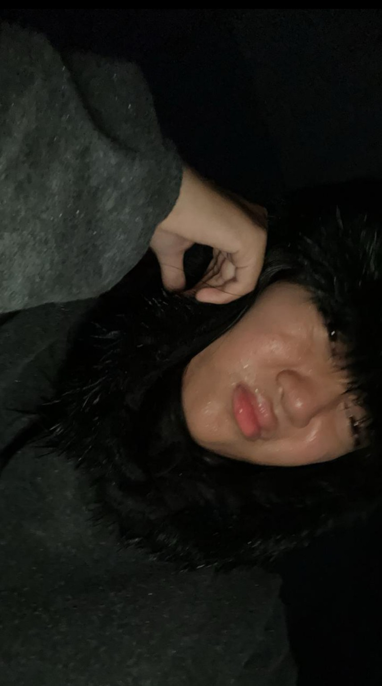

untuk wanita baik bernama Nameca Theresya
🌷💗
🌸🌿
💗🌷
🌸🌿

Hai Nameca Theresya. ❤️
Aku membuat halaman ini bukan karena aku pandai merangkai kata-kata, melainkan karena ada banyak hal yang ingin aku sampaikan kepadamu. Mungkin semua ini terlihat sederhana, hanya sebuah halaman kecil berisi tulisan, foto, bunga-bunga, dan lagu. Tetapi percayalah, setiap bagian dari halaman ini aku buat dengan tulus, karena aku ingin kamu tahu bahwa kehadiranmu pernah membawa arti yang besar di dalam hidupku.
Pertama-tama, aku ingin mengucapkan terima kasih. Terima kasih karena sudah hadir di dalam hidupku. Terima kasih karena tanpa kamu sadari, kehadiranmu pernah membuat hari-hariku terasa lebih hangat, lebih berwarna, dan lebih punya alasan untuk aku syukuri. Ada banyak hal yang mungkin tidak pernah aku ceritakan secara langsung, tetapi kehadiranmu sering kali menjadi salah satu alasan mengapa aku bisa tersenyum di hari yang melelahkan.
Aku bersyukur pernah mengenal seseorang sebaik dirimu. Seseorang yang mungkin tidak selalu sadar bahwa dirinya berharga, tetapi sebenarnya punya cara tersendiri untuk membuat orang lain merasa nyaman. Terima kasih untuk semua cerita yang pernah kamu bagikan, untuk semua tawa yang pernah hadir, untuk perhatian kecil yang mungkin menurutmu biasa saja, tetapi bagiku punya arti yang sangat besar.
Mungkin aku tidak selalu bisa menunjukkan betapa berharganya dirimu. Mungkin aku juga tidak selalu pandai mengungkapkan apa yang aku rasakan. Namun ada satu hal yang selalu ingin aku sampaikan, yaitu bahwa aku benar-benar menghargai kehadiranmu. Tidak semua orang bisa memberikan kesan yang baik dalam hidup seseorang, tetapi kamu berhasil melakukannya dengan cara yang sederhana dan apa adanya.
Aku ingin kamu tahu bahwa kamu tidak harus menjadi sempurna untuk bisa dihargai. Kamu tidak harus selalu kuat untuk terlihat hebat. Kamu tidak harus selalu tersenyum agar orang lain menganggapmu baik-baik saja. Kamu tetap berharga, bahkan di hari-hari ketika kamu merasa lelah, bingung, sedih, atau merasa tidak cukup baik.
Aku juga ingin kamu tahu bahwa aku bangga kepadamu. Bangga dengan semua usaha yang selama ini kamu lakukan, bahkan usaha kecil yang mungkin tidak kamu ceritakan kepada siapa pun. Aku tahu tidak semua hari berjalan mudah. Ada hari-hari ketika semuanya terasa berat. Ada saat di mana kamu merasa capek, merasa ingin diam saja, merasa tidak dimengerti, atau bahkan merasa ingin menyerah. Tapi tolong, jangan menyerah.
Jangan pernah berhenti mengejar mimpi-mimpimu hanya karena jalan yang kamu lalui terasa sulit. Mimpi memang tidak selalu mudah untuk diraih. Kadang kita harus jatuh, gagal, kecewa, bahkan menangis sebelum akhirnya sampai ke tujuan. Namun bukan berarti kita harus berhenti berjalan. Setiap langkah kecil yang kamu lakukan hari ini tetap membawamu lebih dekat kepada impian yang kamu inginkan.
Aku percaya kamu bisa menjadi seseorang yang hebat di masa depan. Mungkin sekarang kamu belum melihat hasil dari semua perjuanganmu. Mungkin terkadang kamu merasa usahamu tidak cukup atau tidak dihargai. Tetapi percayalah, setiap usaha yang kamu lakukan tidak pernah benar-benar sia-sia. Akan ada waktunya semua kerja keras itu membuahkan hasil yang indah, meskipun prosesnya tidak selalu cepat.
Jadi ketika kamu merasa lelah, istirahatlah sebentar. Ketika kamu merasa sedih, menangislah jika memang itu membuatmu lebih lega. Ketika kamu merasa semuanya terlalu berat, ambil waktu untuk menenangkan diri. Tidak apa-apa untuk berhenti sejenak, tidak apa-apa untuk menarik napas lebih dalam, tidak apa-apa untuk tidak selalu kuat. Tetapi setelah itu, bangkitlah lagi, pelan-pelan saja. Yang penting jangan berhenti melangkah.
Dan ada satu hal lagi yang ingin aku ingatkan dengan lembut. Tolong jaga kesehatanmu baik-baik. Jangan sering telat makan, ya. Aku tahu terkadang kamu sibuk, terlalu fokus pada sesuatu, atau bahkan merasa belum lapar. Tetapi tubuhmu tetap membutuhkan energi dan perhatian. Jangan menunggu sampai sakit baru mulai menjaga diri.
Makan yang teratur, minum air yang cukup, dan jangan terlalu sering memaksakan diri. Karena sekuat apa pun seseorang, tubuhnya tetap membutuhkan istirahat. Aku ingin kamu tetap sehat, tetap kuat, dan tetap bisa menjalani hari-harimu dengan baik. Aku ingin kamu bisa tersenyum bukan hanya karena sedang bahagia, tetapi juga karena kamu merasa cukup aman dan cukup dicintai untuk menjadi dirimu sendiri.
Aku ingin melihatmu bahagia dengan pencapaian-pencapaian yang berhasil kamu raih. Aku ingin melihat semua mimpi yang kamu simpan suatu hari nanti benar-benar menjadi kenyataan. Aku ingin kamu selalu ingat bahwa kamu layak mendapatkan hal-hal baik, layak dihargai, layak didukung, dan layak merasa bahagia tanpa harus terus-menerus menyalahkan diri sendiri.
Terima kasih sekali lagi karena sudah hadir dalam hidupku. Terima kasih karena sudah menjadi bagian dari cerita yang akan selalu aku kenang. Entah sejauh apa perjalanan hidup akan membawa kita nanti, aku hanya ingin kamu tahu bahwa aku selalu mendoakan hal-hal baik untukmu.
Semoga langkahmu selalu dimudahkan. Semoga hatimu selalu dikuatkan. Semoga kesehatan selalu menyertaimu. Semoga semua impianmu satu per satu menjadi nyata. Dan semoga, ketika suatu hari kamu membaca ini lagi, kamu akan ingat bahwa pernah ada seseorang yang sangat bersyukur karena dipertemukan denganmu.
Terima kasih, Nameca Theresya. 🌸❤️